age item1 item2 sum_items time1 time2 time3 mean_time
age 0 0 0 1 0 0 0 1
item1 1 0 1 0 0 0 0 1
item2 1 1 0 0 0 0 0 1
sum_items 0 1 1 0 0 0 0 0
time1 1 0 0 1 0 1 1 0
time2 1 0 0 1 1 0 1 0
time3 1 0 0 1 1 1 0 0
mean_time 0 0 0 0 1 1 1 0The mice imputation flow
1 tl;dr
1.1 Generating imputations
We need the user be able to specify the
- data
- number of imputations
- maximum number of iterations
- seed
- imputation method
- the predictor matrix; if relevant with blocks
- the visit sequence
Later on, we may extend this to formula notation for the imputation models.
1.2 Presentation of imputed data
The most conscientious way to export the imputed data is to export both the mids object from mice and present the user with an extracted long format data set. The mids object contains all crucial information about the imputation process and the algorithm. The long format data set mimics the original data, but appends a column indicator for the \(m\) imputed data sets.
- Allow for importing a
midsobject - Generate a long format data set with said
midsobject
A long format does not lull the user into a false sense of security by assuming that a single imputed data set can be used for analysis.
1.3 Analyzing imputed data
With regression as an example, we need to combine the following JASP output to obtain the pooled estimates 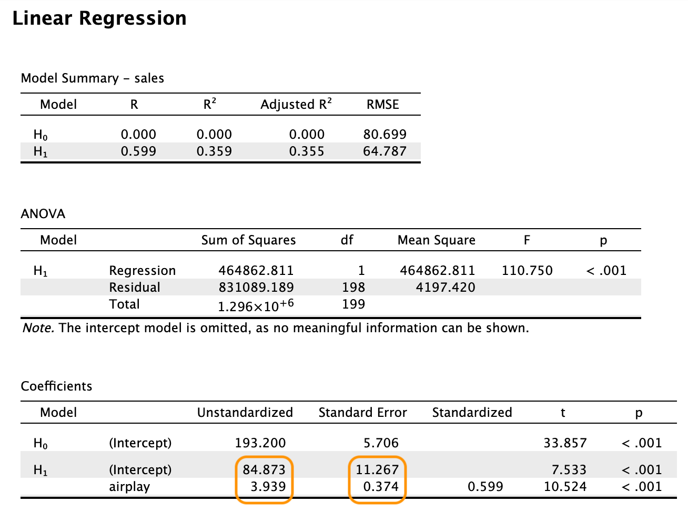
More combinations are needed to present the user with the same familiar output as above. This is highlighted in the Section 8 section. In short, for any output other than the quantity of interest one could choose to:
- omit the output and only present the pooled estimates and combined inference
- aggregate the other output e.g. as follows:
- normal sampling distribution –> take average and show variance/range
- non-normal sampling distribution –> show some proxy of the distribution
Never present users with the separate output of one or more imputed data sets - they may be tempted to use them for analysis. If necessary, these results can be obtained by the user by splitting on the imputation indicator.
2 Introduction to mice
Package mice in R is a powerful tool for imputing missing data. It is a flexible and easy-to-use package that can handle different types of missing data, including monotone missing data, non-monotone missing data, and missing data in time series. The package is also capable of handling missing data in both continuous and categorical variables.
The mice package is based on the concept of multiple imputation, which is a statistical technique that involves creating multiple imputed datasets, analyzing each dataset separately, and then combining the results to obtain a single set of estimates. This approach has been shown to be more accurate and reliable than other imputation methods, such as mean imputation or listwise deletion and can be seen as a quick approximation of a full Bayesian solution.
The mice package is widely used in a variety of fields, including social science, epidemiology, and public health, and is an essential tool for researchers who need to analyze datasets with missing data. mice has become the de facto standard for multiple imputation in R and is widely used in both academia and industry with over 1 million downloads every year from CRAN.
3 Aim of this flow
In this flow, we will provide an overview of the mice package and demonstrate how it approaches the stages of imputation, analysis, evaluation and combination.
4 Imputation
The mice algorithm is an algorithm to generate multiple imputations by chained equations.
Why multiple imputations?
With imputation, some estimation procedure is used to impute (fill in) each missing datum, resulting in a completed dataset that can be analyzed as if the data were completely observed. We can do this once (single imputation) or multiple times (multiple imputation).
With multiple imputation, each missing datum is imputed \(m \geq 2\) times, resulting in \(m\) completed datasets. The \(m\) completed datasets are then analyzed separately, and the results are combined to yield valid statistical inference.
Multiple imputation (Rubin, 1987) has some benefits over single imputation:
- it accounts for missing data uncertainty
- it accounts for parameter uncertainty
- can yield valid inference without additional adjustments
The mice algorithm was initially designed as a fully conditional specification (FCS) algorithm, which is a type of imputation algorithm that imputes each variable separately, one-by-one, conditional on all other variables in the dataset. The FCS algorithm is based on the idea that imputing each variable separately allows for more flexibility than imputing all variables simultaneously. The rationale behind this thought is that in mice, each incomplete feature in the data can be addressed by a separate imputation model, which can be tailored to the specific characteristics of the feature. An efficient sufficient set of predictors can be chosen for each model, to further optimize the imputation process.
Sometimes, however, it is not desirable to adopt the chained equations approach to imputation. For example, if multiple features in the data obey a specific deterministic relation, then parts of the data should be jointly imputed, instead of separately. Otherwise, the interdepency of features is ignored by the imputation model, which renders the imputation procedure uncongenial with respect to the analysis. To accommodate this, the mice has since deviated from a strictly variable-by-variable architecture and allows for the flexible joint imputation of (blocks of) features. This hybrid approach - where the imputer can assign blocks of features to be jointly imputed, next to other features still being imputed on a variable-by-variable basis - greatly enhances the practical applicability of the mice algorithm. If desired, mice can serve as fully joint imputation method, by specifying the imputation model to be a multivariate model and all features to be imputed as a single joint block.
4.1 Imputation procedure
Let \(Y\) be an incomplete column in the data, with
- \(Y_\mathrm{mis}\) denoting the unobserved part;
- \(Y_\mathrm{obs}\) denotes the observed part.
Let \(X\) be a set of completely observed covariates.
4.1.1 Joint model imputation
With joint modeling, imputations are drawn from an assumed joint multivariate distribution.
- Often a multivariate normal model is used for both continuous and categorical data,
- Other joint models have been proposed (see e.g. Olkin and Tate, 1961; Van Buuren and van Rijckevorsel, 1992; Schafer, 1997; Van Ginkel et al., 2007; Goldstein et al., 2009; Chen et al., 2011).
Joint modeling imputations generated under the normal model are usually robust to misspecification of the imputation model (Schafer, 1997; Demirtas et al., 2008), although transformation towards normality is generally beneficial.
The procedure for joint modeling is as follows:
- Specify the joint model \(P(Y,X)\)
- Derive \(P(Y_\mathrm{mis}|Y_\mathrm{obs},X)\)
- Draw imputations \(\dot Y_\mathrm{mis}\) with a Gibbs sampler
4.1.2 Fully conditional specification
Multiple imputation by means of FCS does not start from an explicit multivariate model. With FCS, multivariate missing data is imputed by univariately specifying an imputation model for each incomplete variable, conditional on a set of other (possibly incomplete) variables.
- the multivariate distribution for the data is thereby implicitly specified through the univariate conditional densities.
- imputations are obtained by iterating over the conditionally specified imputation models.
The general procedure for fully conditional specification would be to
- Specify \(P(Y^\mathrm{mis} | Y^\mathrm{obs}, X)\)
- Draw imputations \(\dot Y^\mathrm{mis}\) with Gibbs sampler
The idea of using conditionally specified models to deal with missing data has been discussed and applied by many authors (see e.g. Kennickell, 1991; Raghunathan and Siscovick, 1996; Oudshoorn et al., 1999; Brand, 1999; Van Buuren et al., 1999; Van Buuren and Oudshoorn, 2000; Raghunathan et al., 2001; Faris et al., 2002; Van Buuren et al., 2006.)
Comparisons between JM and FCS have been made that indicate that FCS is a useful and flexible alternative to JM when the joint distribution of the data is not easily specified (Van Buuren, 2007) and that similar results may be expected from both imputation approaches (Lee and Carlin, 2010).
In mice, the fully conditional specification has been implemented as follows:
- Specify the imputation models \(P(Y_j^\mathrm{mis} | Y_j^\mathrm{obs}, Y_{-j}, X)\), where \(Y_{−j}\) is the set of incomplete variables except \(Y_j\)
- Fill in starting values for the missing data. It does not matter what these values are, as long as they are not missing. Random univariate draws have proven to be computationally convenient without hindering the speed of algorithmic convergence.
- Iterate
4.1.3 Hybrids of JM and FCS
In mice we can combine the flexibility of FCS with the appealing theoretical properties of joint modeling. In order to do so, we need to partition the variables into blocks
For example, we might partition \(b\) blocks \(h = 1,\dots,b\) as follows
a single block with \(b=1\) would hold a joint model: \[\{Y_1, Y_2, Y_3, Y_4\}, X\]
a quadruple block with \(b=4\) would be the conventional fully conditional specification algorithm \[\{Y_1\},\{Y_2\},\{Y_3\},\{Y_4\}, X\]
anything in between would be a hybrid between the joint model and fully conditional specification. For example, \[\{Y_1, Y_2, Y_3\},\{Y_4\}, X\]
4.1.3.1 Why is this useful
There are many scenarios where a hybrid imputation procedure would be useful. wewill highlight a few:
- Imputing squares/nonlinear effects: In the model \(y=\alpha + \beta_1X+\beta_2X^2 + \epsilon\), \(X\) and \(X^2\) should be imputed jointly (Von Hippel, 2009, Seaman, Bartlett & White, 2012, Vink & Van Buuren, 2013, Bartlett et al., 2015)
- Compositional data: The simplex space in compositional data should be considered as. joint, because the relations between the variables are captured in the ratios. Although some clever subsetting of the problem would allow this to be solved with FCS (Vink, 2015, Ch5), it is better to consider the joint distribution in the following nested composition:
\[ \begin{array}{lllllllllllll} x_0 &= &x_1 &+ &x_2 &+ &x_3 &+& x_4 & & & &\\ & &= & & & & && = & & & &\\ & &x_9 & & & & && x_5 & & & &\\ & &+ & & & & && + & & & &\\ & &x_{10} & & & & &&x_6 &= &x_7 &+&x_8 \end{array} \]
- Multivariate PMM: Imputing a combination of outcomes optimally based on a linear combination of covariates (Cai, Vink & Van Buuren, 2023).
4.1.3.2 Nesting joint modeling in FCS
The following table details \(b=2\) blocks.
| b | h | target | predictors | type |
|---|---|---|---|---|
| 2 | 1 | \(\{Y_1, Y_2, Y_3\}\) | \(Y_4, X\) | multivariate |
| 2 | 2 | \(Y_4\) | \(Y_1, Y_2, Y_3, X\) | univariate |
The first block considers the multivariate imputation of the set \((Y_1, Y_2, Y_3)\). The second block considers the univariate imputation of the remaining column \(Y_4\).
4.1.3.3 Nesting FCS in FCS
With FCS, the scheme on the previous table would take the following embedded structure:
| b | h | j | target | predictors | type |
|---|---|---|---|---|---|
| 2 | 1 | 1 | \(Y_1\) | \(Y_2, Y_3, Y_4, X\) | univariate |
| 2 | 1 | 2 | \(Y_2\) | \(Y_1, Y_3, Y_4, X\) | univariate |
| 2 | 1 | 3 | \(Y_3\) | \(Y_1, Y_2, Y_4, X\) | univariate |
| 2 | 2 | 1 | \(Y_4\) | \(Y_1, Y_2, Y_3, X\) | univariate |
The first block is a FCS loop within an FCS imputation procedure.
4.1.3.4 Benefits of blocks in mice()
- Looping over \(b\) blocks instead of looping over \(p\) columns.
- Only specify \(b \times p\) predictor relations and not \(p^2\).
- Only specify \(b\) univariate imputation methods instead of \(p\) methods.
- Ability for imputing more than one column at once
- Simplified overall model specification
- e.g. sets of items in scales, matching items in longitudinal data, joining data sets, etc.
4.2 Selecting predictors
Under the conventional FCS predictor specification, we could hypothesize the following predictorMatrix.
In this predictor matrix, the columns indicate the predictor features and the rows are the target features. The value of 1 indicates that the column is a predictor in the imptutaion model for the row.
Under the outlined hybrid blocked imputation approach, however, we could simplify these specifications into the following blocks and predictor relations.
blocks <- list(age = "age",
A = c("item1", "item2", "sum_items"),
B = c("time1", "time2", "time3", "mean_time")) age item1 item2 sum_items time1 time2 time3 mean_time
age 0 0 0 1 0 0 0 1
Items 1 0 0 0 0 0 0 1
Time 1 0 0 1 0 0 0 0Fully conditionally specified predictor matrices can easily be generated as follows:
mice::make.predictorMatrix(mice::boys) age hgt wgt bmi hc gen phb tv reg
age 0 1 1 1 1 1 1 1 1
hgt 1 0 1 1 1 1 1 1 1
wgt 1 1 0 1 1 1 1 1 1
bmi 1 1 1 0 1 1 1 1 1
hc 1 1 1 1 0 1 1 1 1
gen 1 1 1 1 1 0 1 1 1
phb 1 1 1 1 1 1 0 1 1
tv 1 1 1 1 1 1 1 0 1
reg 1 1 1 1 1 1 1 1 04.3 Selecting an imputation method
The mice package provides a variety of imputation methods for different types of data. The imputation method can be specified for each imputation model. Default for continuous data is predictive mean matching (PMM), for binary data logistic regression, and for unordered categorical data polytomous regression.
The mice algorithm needs to know which imputation method to use for each variable. The imputation method is specified in the method argument of the mice() function. The method argument is a list that contains the imputation method for each variable in the dataset. The imputation method can be specified as a character string or as a function.
A default method vector can be created as follows:
mice::make.method(mice::boys) age hgt wgt bmi hc gen phb tv
"" "pmm" "pmm" "pmm" "pmm" "polr" "polr" "pmm"
reg
"polyreg" age is left intentionally empty because the column is completely observed and needs no imputation.
4.4 Determining the visit sequence
By default, mice iterates over the columns in a dataset in the order they appear. However, the order in which the columns are imputed can have a significant impact on the quality of the imputations. For example, if a total is updated before the imputation of its components, the imputation of any source the total is dependent on, will be inefficient, or even incorrect.
A default visitSequence can be created as follows:
mice::make.visitSequence(mice::boys)[1] "age" "hgt" "wgt" "bmi" "hc" "gen" "phb" "tv" "reg"5 Analysis of imputed data
After the imputation process is complete, the imputed datasets can be analyzed using standard statistical methods. Van Buuren (2020) provides the following schematic overview of the multiple imputation data analysis pipeline.

In step 1, we create several \(m\) complete versions of the data by replacing the missing values by plausible data values. The task of step 2 is to estimate the parameters of scientific or commercial interest from each imputed dataset. Step 3 involves pooling the \(m\) parameter estimates into one estimate, and obtaining an estimate of its variance. The results allow us to arrive at valid decisions from the data, accounting for the missing data and having the correct type I error rate.
These steps relate the following table:
| Class | Name | Produced by | Description |
|---|---|---|---|
mids |
imp |
mice::mice() |
multiply imputed dataset |
mild |
idl |
mice::complete() |
multiply imputed list of data |
mira |
fit |
mice::with() |
multiple imputation repeated analyses |
mipo |
est |
mice::pool() |
multiple imputation pooled results |
A standard workflow to generate 5 imputations with mice and giving the algorithm 10 iterations would be:
library(magrittr)
library(purrr)
Attaching package: 'purrr'The following object is masked from 'package:magrittr':
set_nameslibrary(mice)
Attaching package: 'mice'The following object is masked from 'package:stats':
filterThe following objects are masked from 'package:base':
cbind, rbindmeth <- make.method(boys)
pred <- make.predictorMatrix(boys)
vis <- make.visitSequence(boys)
imp <- mice(boys, m = 5, maxit = 10,
method = meth,
predictorMatrix = pred,
visitSequence = vis,
seed = 123) # for reproducibility
iter imp variable
1 1 hgt wgt bmi hc gen phb tv reg
1 2 hgt wgt bmi hc gen phb tv reg
1 3 hgt wgt bmi hc gen phb tv reg
1 4 hgt wgt bmi hc gen phb tv reg
1 5 hgt wgt bmi hc gen phb tv reg
2 1 hgt wgt bmi hc gen phb tv reg
2 2 hgt wgt bmi hc gen phb tv reg
2 3 hgt wgt bmi hc gen phb tv reg
2 4 hgt wgt bmi hc gen phb tv reg
2 5 hgt wgt bmi hc gen phb tv reg
3 1 hgt wgt bmi hc gen phb tv reg
3 2 hgt wgt bmi hc gen phb tv reg
3 3 hgt wgt bmi hc gen phb tv reg
3 4 hgt wgt bmi hc gen phb tv reg
3 5 hgt wgt bmi hc gen phb tv reg
4 1 hgt wgt bmi hc gen phb tv reg
4 2 hgt wgt bmi hc gen phb tv reg
4 3 hgt wgt bmi hc gen phb tv reg
4 4 hgt wgt bmi hc gen phb tv reg
4 5 hgt wgt bmi hc gen phb tv reg
5 1 hgt wgt bmi hc gen phb tv reg
5 2 hgt wgt bmi hc gen phb tv reg
5 3 hgt wgt bmi hc gen phb tv reg
5 4 hgt wgt bmi hc gen phb tv reg
5 5 hgt wgt bmi hc gen phb tv reg
6 1 hgt wgt bmi hc gen phb tv reg
6 2 hgt wgt bmi hc gen phb tv reg
6 3 hgt wgt bmi hc gen phb tv reg
6 4 hgt wgt bmi hc gen phb tv reg
6 5 hgt wgt bmi hc gen phb tv reg
7 1 hgt wgt bmi hc gen phb tv reg
7 2 hgt wgt bmi hc gen phb tv reg
7 3 hgt wgt bmi hc gen phb tv reg
7 4 hgt wgt bmi hc gen phb tv reg
7 5 hgt wgt bmi hc gen phb tv reg
8 1 hgt wgt bmi hc gen phb tv reg
8 2 hgt wgt bmi hc gen phb tv reg
8 3 hgt wgt bmi hc gen phb tv reg
8 4 hgt wgt bmi hc gen phb tv reg
8 5 hgt wgt bmi hc gen phb tv reg
9 1 hgt wgt bmi hc gen phb tv reg
9 2 hgt wgt bmi hc gen phb tv reg
9 3 hgt wgt bmi hc gen phb tv reg
9 4 hgt wgt bmi hc gen phb tv reg
9 5 hgt wgt bmi hc gen phb tv reg
10 1 hgt wgt bmi hc gen phb tv reg
10 2 hgt wgt bmi hc gen phb tv reg
10 3 hgt wgt bmi hc gen phb tv reg
10 4 hgt wgt bmi hc gen phb tv reg
10 5 hgt wgt bmi hc gen phb tv regThen, if we fit the model age ~ height + weight on each imputed dataset, we would use the following code:
fit <- with(imp, lm(age ~ hgt + wgt)) # obtain
fitcall :
with.mids(data = imp, expr = lm(age ~ hgt + wgt))
call1 :
mice(data = boys, m = 5, method = meth, predictorMatrix = pred,
visitSequence = vis, maxit = 10, seed = 123)
nmis :
age hgt wgt bmi hc gen phb tv reg
0 20 4 21 46 503 503 522 3
analyses :
[[1]]
Call:
lm(formula = age ~ hgt + wgt)
Coefficients:
(Intercept) hgt wgt
-7.48938 0.10641 0.07249
[[2]]
Call:
lm(formula = age ~ hgt + wgt)
Coefficients:
(Intercept) hgt wgt
-7.45877 0.10622 0.07248
[[3]]
Call:
lm(formula = age ~ hgt + wgt)
Coefficients:
(Intercept) hgt wgt
-7.4487 0.1060 0.0729
[[4]]
Call:
lm(formula = age ~ hgt + wgt)
Coefficients:
(Intercept) hgt wgt
-7.40083 0.10558 0.07344
[[5]]
Call:
lm(formula = age ~ hgt + wgt)
Coefficients:
(Intercept) hgt wgt
-7.44715 0.10605 0.07271 class(fit)[1] "mira" "matrix"or the following pipe
fit_2 <- imp |>
complete("all") |> # obtain object of class mild
map(~.x %$% lm(age ~ hgt + wgt)) # obtain object of class mira for each idl
fit_2$`1`
Call:
lm(formula = age ~ hgt + wgt)
Coefficients:
(Intercept) hgt wgt
-7.48938 0.10641 0.07249
$`2`
Call:
lm(formula = age ~ hgt + wgt)
Coefficients:
(Intercept) hgt wgt
-7.45877 0.10622 0.07248
$`3`
Call:
lm(formula = age ~ hgt + wgt)
Coefficients:
(Intercept) hgt wgt
-7.4487 0.1060 0.0729
$`4`
Call:
lm(formula = age ~ hgt + wgt)
Coefficients:
(Intercept) hgt wgt
-7.40083 0.10558 0.07344
$`5`
Call:
lm(formula = age ~ hgt + wgt)
Coefficients:
(Intercept) hgt wgt
-7.44715 0.10605 0.07271 class(fit_2)[1] "list"Pooling the model parameters happens by default conform the combination rules proposed by Rubin (1987, p76). Rubin defined \(Q\) as the quantity of interest (possibly a vector) and \(U\) as its variance. With multiple imputation, \(m\) complete data estimates can be averaged as \[\bar{Q}=\frac{1}{m}\sum^{m}_{l=1}{ \hat{Q}}_{l},\]
where \(\hat Q_l\) is an estimate of \(Q\) from the \(l\)-th imputed data set. Let \(\bar U_l\) be the estimated variance-covariance matrix of \(\hat Q_l\). The complete data variances of \(Q\) can be combined by
\[\bar{U}=\frac{1}{m}\sum^{m}_{l=1}{ {\bar U}}_{l}.\] The variance between the complete data estimates can be calculated as
\[B=\frac{1}{m-1}\sum^{m}_{l=1}(\hat{ Q}_l-\bar{Q})^\prime(\hat{ Q}_l-\bar{Q}).\]
The total variance of \(({ Q}-\bar{Q})\) is then defined as
\[T=\bar{U}+B+B/m.\]
Obtaining the pooled estimates from either workflow is then straightforward with the mice::pool() function
pool(fit)Class: mipo m = 5
term m estimate ubar b t dfcom
1 (Intercept) 5 -7.44895766 5.796089e-02 1.012437e-03 5.917582e-02 745
2 hgt 5 0.10605533 1.070342e-05 9.690545e-08 1.081971e-05 745
3 wgt 5 0.07280384 3.421076e-05 1.556045e-07 3.439749e-05 745
df riv lambda fmi
1 675.9179 0.02096111 0.020530763 0.023416147
2 719.7451 0.01086443 0.010747662 0.013485148
3 734.9734 0.00545809 0.005428461 0.008123874pool(fit_2)Class: mipo m = 5
term m estimate ubar b t dfcom
1 (Intercept) 5 -7.44895766 5.796089e-02 1.012437e-03 5.917582e-02 745
2 hgt 5 0.10605533 1.070342e-05 9.690545e-08 1.081971e-05 745
3 wgt 5 0.07280384 3.421076e-05 1.556045e-07 3.439749e-05 745
df riv lambda fmi
1 675.9179 0.02096111 0.020530763 0.023416147
2 719.7451 0.01086443 0.010747662 0.013485148
3 734.9734 0.00545809 0.005428461 0.008123874class(fit)[1] "mira" "matrix"and a mice::summary.mipo() is available to obtain statistical tests and confidence intervals.
fit |>
pool() |>
summary(conf.int = TRUE) term estimate std.error statistic df p.value
1 (Intercept) -7.44895766 0.243260806 -30.62128 675.9179 7.774115e-130
2 hgt 0.10605533 0.003289332 32.24221 719.7451 7.907088e-142
3 wgt 0.07280384 0.005864937 12.41341 734.9734 2.945329e-32
2.5 % 97.5 %
1 -7.92659536 -6.97131997
2 0.09959750 0.11251317
3 0.06128982 0.08431787fit_2 |>
pool() |>
summary(conf.int = TRUE) term estimate std.error statistic df p.value
1 (Intercept) -7.44895766 0.243260806 -30.62128 675.9179 7.774115e-130
2 hgt 0.10605533 0.003289332 32.24221 719.7451 7.907088e-142
3 wgt 0.07280384 0.005864937 12.41341 734.9734 2.945329e-32
2.5 % 97.5 %
1 -7.92659536 -6.97131997
2 0.09959750 0.11251317
3 0.06128982 0.084317876 Evaluation of algorithmic convergence
The mice algorithm is an iterative algorithm that generates imputations by iteratively cycling over the incomplete variables in the dataset, where every iteration would represent a new cycle according to the visitSequence. The algorithm stops when the maximum number of iterations maxit is reached. At this point, the algorithm may not have converged and closer inspection is needed. mice provides a mice::plot() function to generate trace plots based on the means and variances of the multiple chains in an object of class mids.
plot(imp)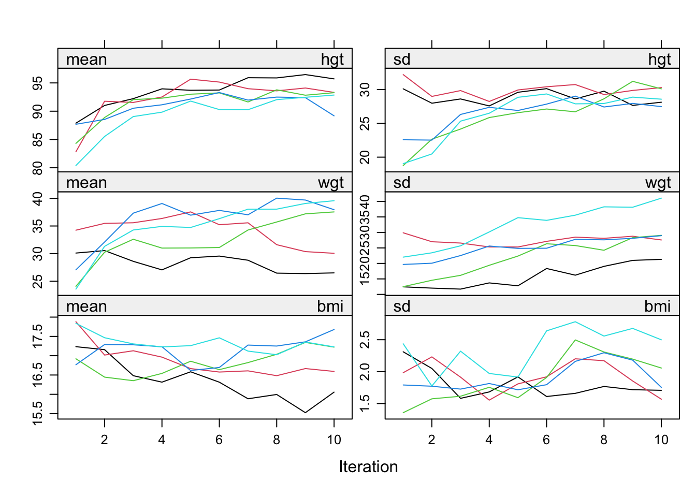
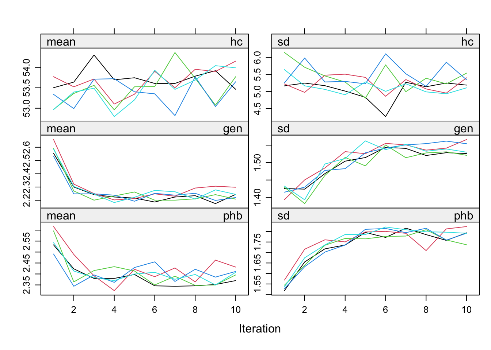
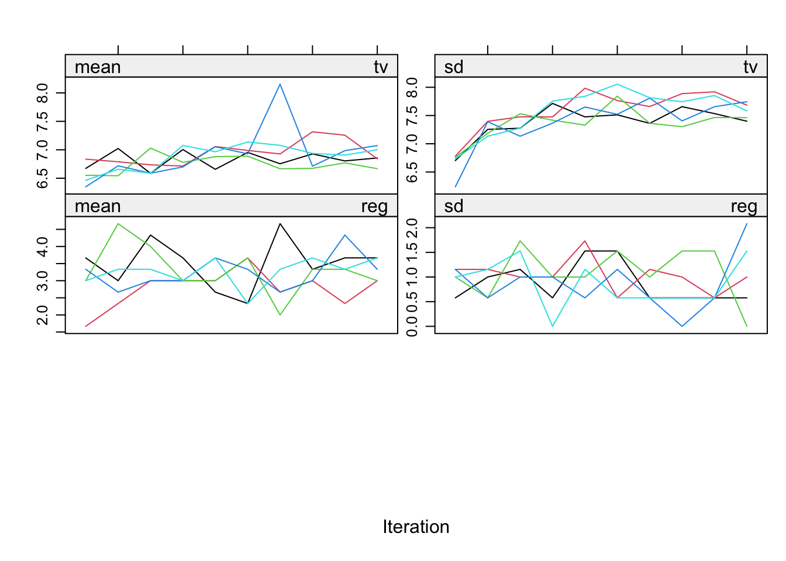
As you can see, convergence is not optimal here because the deterministic relation between wgt, hgt and bmi is not jointly considered. But that is not the focus of this document, so we ignore the nonconvergence for now.
7 Evaluation of the imputations
The imputations can be evaluated using a variety of methods, including graphical methods, statistical tests, and comparisons with other imputation methods. The mice package provides a variety of functions for evaluating the imputed and the incomplete data, including mice::densityplot(), mice::xyplot(), mice::stripplot(), mice::bwplot(), mice::fluxplot(), mice::md.pattern().
densityplot(imp)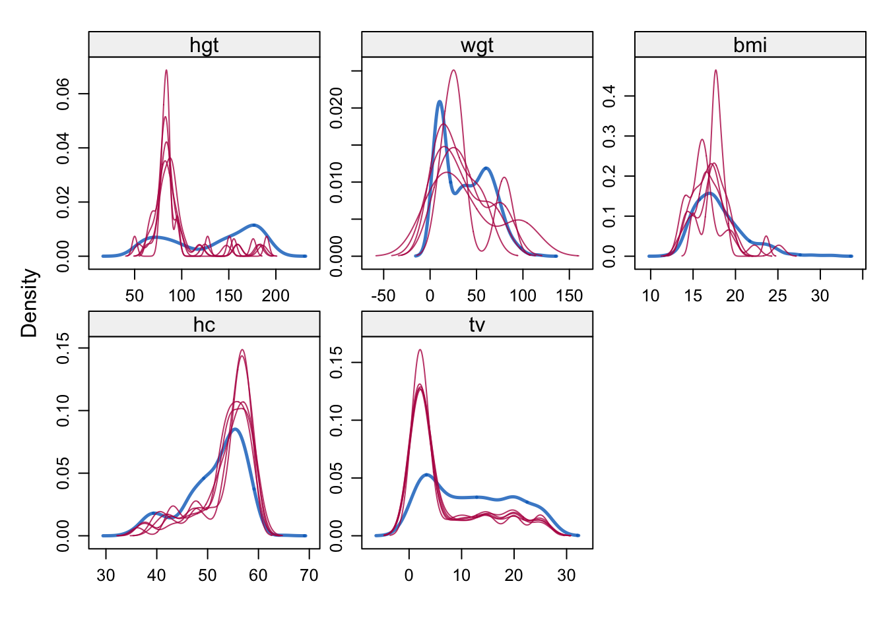
xyplot(imp, age ~ tv)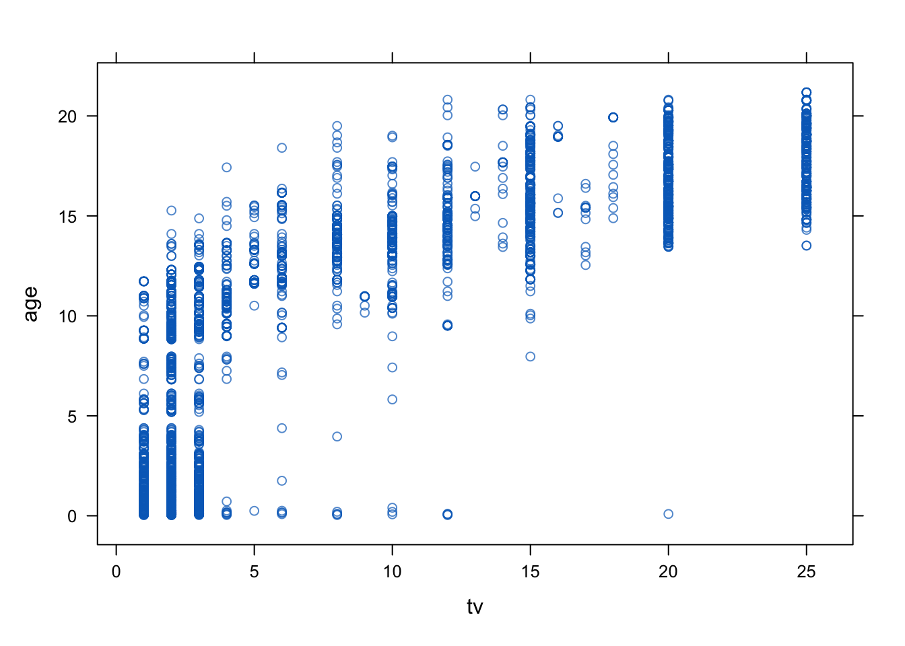
stripplot(imp)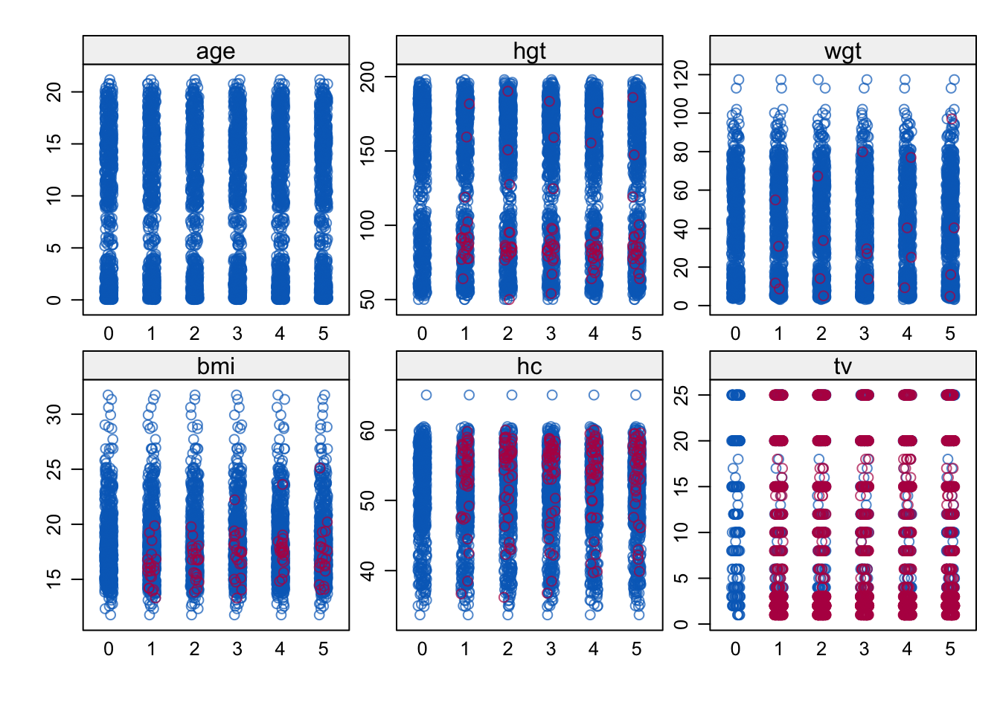
bwplot(imp)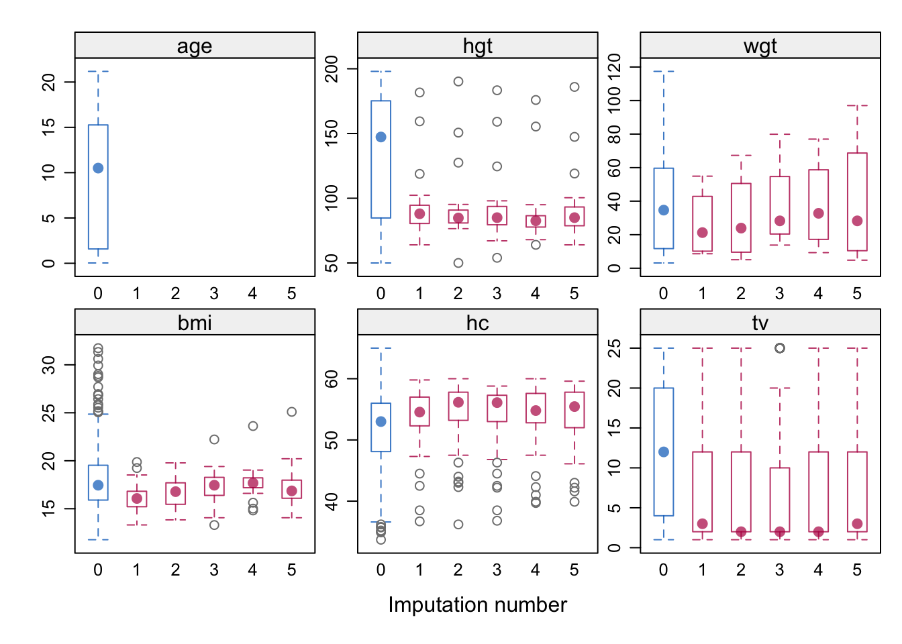
fluxplot(boys)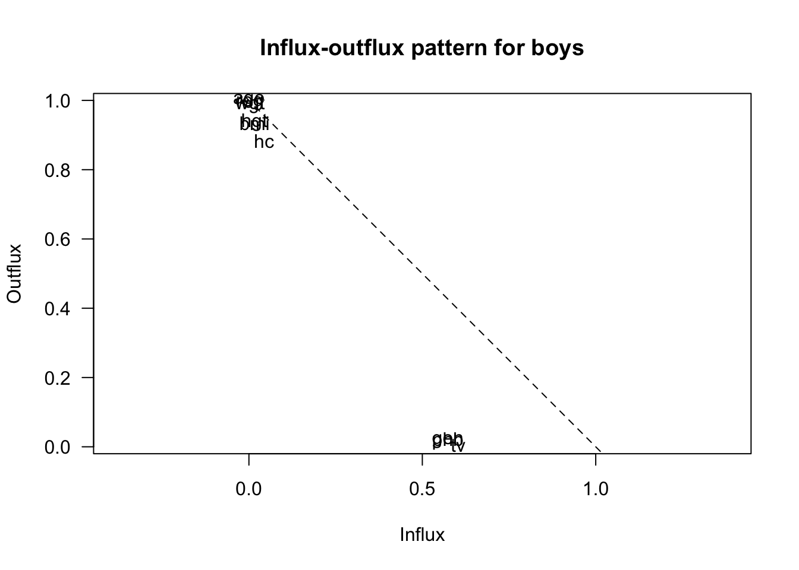
md.pattern(boys)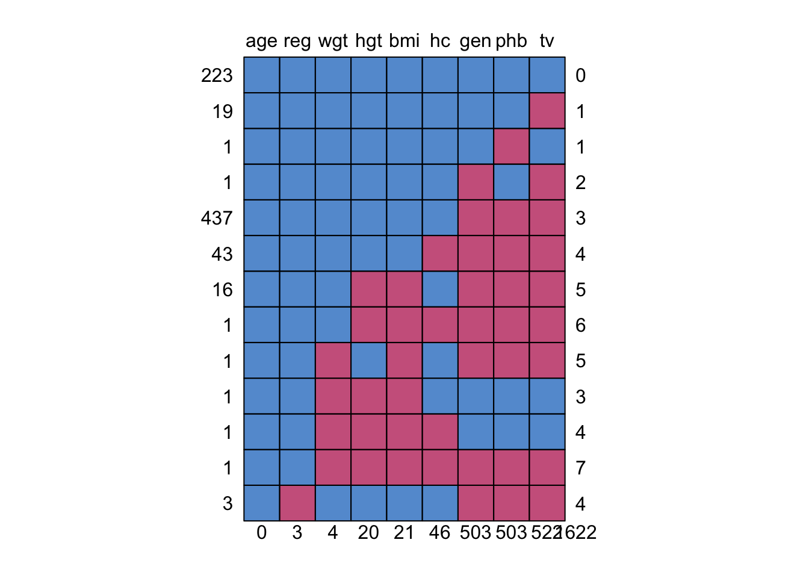
age reg wgt hgt bmi hc gen phb tv
223 1 1 1 1 1 1 1 1 1 0
19 1 1 1 1 1 1 1 1 0 1
1 1 1 1 1 1 1 1 0 1 1
1 1 1 1 1 1 1 0 1 0 2
437 1 1 1 1 1 1 0 0 0 3
43 1 1 1 1 1 0 0 0 0 4
16 1 1 1 0 0 1 0 0 0 5
1 1 1 1 0 0 0 0 0 0 6
1 1 1 0 1 0 1 0 0 0 5
1 1 1 0 0 0 1 1 1 1 3
1 1 1 0 0 0 0 1 1 1 4
1 1 1 0 0 0 0 0 0 0 7
3 1 0 1 1 1 1 0 0 0 4
0 3 4 20 21 46 503 503 522 1622A similar but more flexible ‘Grammar of Graphics’ approach can be obtained by the ggmice package.. But I’ll leave that out for now.
8 What JASP output is crucial?
Based on the above outline of the procedure and the standard (i.e. minimum) set of evaluations and plots to be available, the following JASP output is needed to perform the pooling steps:
8.1 Linear regression
Take the following output from JASP as an example. 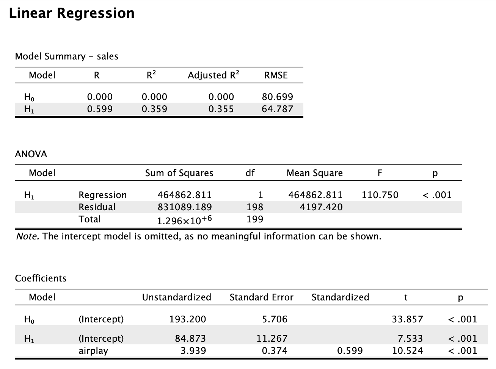 With R we would do the following:
data <- read.csv("Album Sales.jasp.csv")
data %$%
lm(sales ~ airplay) %>%
summary
Call:
lm(formula = sales ~ airplay)
Residuals:
Min 1Q Median 3Q Max
-173.649 -47.894 1.496 39.072 145.432
Coefficients:
Estimate Std. Error t value Pr(>|t|)
(Intercept) 84.8725 11.2670 7.533 1.73e-12 ***
airplay 3.9392 0.3743 10.524 < 2e-16 ***
---
Signif. codes: 0 '***' 0.001 '**' 0.01 '*' 0.05 '.' 0.1 ' ' 1
Residual standard error: 64.79 on 198 degrees of freedom
Multiple R-squared: 0.3587, Adjusted R-squared: 0.3555
F-statistic: 110.7 on 1 and 198 DF, p-value: < 2.2e-168.2 Pooling regression output
8.2.1 Coefficients and their tests
To illustrate the mice workflow, we induce some missingness in the data with mice::ampute(). In mice we would do the following:
set.seed(123)
imp <- ampute(data)$amp |> # make some missings because there are none
mice(printFlag=FALSE) # impute, but omit iteration history printing
idl <- imp |>
complete("all") # obtain object of class mild
idl |>
map(~.x %$% lm(sales ~ airplay)) |> # run the model on each imputed dataset
pool() %>% # pool the results
summary(conf.int = TRUE) # obtain the combined inference term estimate std.error statistic df p.value 2.5 %
1 (Intercept) 87.412824 11.9656311 7.305325 86.36787 1.289424e-10 63.627382
2 airplay 3.818986 0.3818029 10.002505 123.39576 1.304828e-17 3.063254
97.5 %
1 111.198266
2 4.574717This yields part of the standard SPSS output. The pooled estimates are based on the combination of the following model output by means of Rubin’s rules.
8.2.2 Seperate output per imputed data set
idl |>
map(~.x %$% lm(sales ~ airplay) %>% summary(conf.int = TRUE))$`1`
Call:
lm(formula = sales ~ airplay)
Residuals:
Min 1Q Median 3Q Max
-169.220 -47.316 0.615 49.464 168.827
Coefficients:
Estimate Std. Error t value Pr(>|t|)
(Intercept) 94.4186 11.2360 8.403 8.38e-15 ***
airplay 3.6755 0.3755 9.789 < 2e-16 ***
---
Signif. codes: 0 '***' 0.001 '**' 0.01 '*' 0.05 '.' 0.1 ' ' 1
Residual standard error: 66.52 on 198 degrees of freedom
Multiple R-squared: 0.3261, Adjusted R-squared: 0.3227
F-statistic: 95.82 on 1 and 198 DF, p-value: < 2.2e-16
$`2`
Call:
lm(formula = sales ~ airplay)
Residuals:
Min 1Q Median 3Q Max
-170.681 -47.182 4.067 41.651 143.315
Coefficients:
Estimate Std. Error t value Pr(>|t|)
(Intercept) 87.5187 10.9381 8.001 1.02e-13 ***
airplay 3.8333 0.3598 10.653 < 2e-16 ***
---
Signif. codes: 0 '***' 0.001 '**' 0.01 '*' 0.05 '.' 0.1 ' ' 1
Residual standard error: 63.7 on 198 degrees of freedom
Multiple R-squared: 0.3643, Adjusted R-squared: 0.3611
F-statistic: 113.5 on 1 and 198 DF, p-value: < 2.2e-16
$`3`
Call:
lm(formula = sales ~ airplay)
Residuals:
Min 1Q Median 3Q Max
-166.856 -47.604 3.525 38.292 167.869
Coefficients:
Estimate Std. Error t value Pr(>|t|)
(Intercept) 86.8452 11.1913 7.76 4.42e-13 ***
airplay 3.7738 0.3665 10.30 < 2e-16 ***
---
Signif. codes: 0 '***' 0.001 '**' 0.01 '*' 0.05 '.' 0.1 ' ' 1
Residual standard error: 65.67 on 198 degrees of freedom
Multiple R-squared: 0.3488, Adjusted R-squared: 0.3455
F-statistic: 106 on 1 and 198 DF, p-value: < 2.2e-16
$`4`
Call:
lm(formula = sales ~ airplay)
Residuals:
Min 1Q Median 3Q Max
-175.406 -46.785 2.935 46.767 183.900
Coefficients:
Estimate Std. Error t value Pr(>|t|)
(Intercept) 84.632 10.972 7.713 5.86e-13 ***
airplay 3.977 0.360 11.048 < 2e-16 ***
---
Signif. codes: 0 '***' 0.001 '**' 0.01 '*' 0.05 '.' 0.1 ' ' 1
Residual standard error: 64.31 on 198 degrees of freedom
Multiple R-squared: 0.3814, Adjusted R-squared: 0.3782
F-statistic: 122.1 on 1 and 198 DF, p-value: < 2.2e-16
$`5`
Call:
lm(formula = sales ~ airplay)
Residuals:
Min 1Q Median 3Q Max
-166.933 -44.401 5.462 38.955 147.173
Coefficients:
Estimate Std. Error t value Pr(>|t|)
(Intercept) 83.650 10.835 7.72 5.62e-13 ***
airplay 3.836 0.350 10.96 < 2e-16 ***
---
Signif. codes: 0 '***' 0.001 '**' 0.01 '*' 0.05 '.' 0.1 ' ' 1
Residual standard error: 63.15 on 198 degrees of freedom
Multiple R-squared: 0.3776, Adjusted R-squared: 0.3745
F-statistic: 120.1 on 1 and 198 DF, p-value: < 2.2e-168.2.3 R-squared
We can grab any necessary values from the mice imputations as follows. For example, to obtain the \(R^2\) values for each imputed dataset, we would do the following:
idl |>
map(~.x %$% lm(sales ~ airplay) %>% summary) |>
map_dbl(~.$r.squared) # Extract R^2 for each model 1 2 3 4 5
0.3261084 0.3643297 0.3487738 0.3813636 0.3775998 Pooling \(R^2\) values isn’t directly supported by most statistical methodologies because is a measure of model fit rather than a parameter estimate. However, we could consider reporting the range, mean, or median of these values as a descriptive statistic of how the models perform across the imputed datasets. I believe Joost van Ginkel (LeidenUniv) has some methodological evaluations about combination approaches for \(R^2\) values.
8.2.4 Overall model ANOVA
Obtaining an estimate of the pooled ANOVA could be done as follows, by comparing the full model to the nested empty model.
# Needs to use the with() workflow
fit1 <- with(imp, lm(sales ~ 1)) # intercept only
fit2 <- with(imp, lm(sales ~ airplay)) # intercept and airplay
D1(fit2, fit1) # multivariate Wald test test statistic df1 df2 dfcom p.value riv
1 ~~ 2 100.0501 1 4 198 0.0005614589 0.1097006D2(fit2, fit1) # combining test statistic (least assumptions AND power) test statistic df1 df2 dfcom p.value riv
1 ~~ 2 84.04016 1 67.71985 NA 1.747871e-13 0.3210682D3(fit2, fit1) # likelihood-ratio test test statistic df1 df2 dfcom p.value riv
1 ~~ 2 80.45968 1 419.1569 198 9.98403e-18 0.1082642There are also other ways of combining the ANOVA, such as multiplying the \(m\) F-statistics with their degrees of freedom, and then pooling according an approximation of the \(\chi^2\) distribution (see e.g. the miceadds::micombine.F function).
library(miceadds)* miceadds 3.17-44 (2024-01-08 19:08:24)Fs <- idl |>
map(~.x %$% anova(lm(sales ~ airplay))) |>
map_dbl(~.$F[1])
dfs <- idl |>
map(~.x %$% anova(lm(sales ~ airplay))) |>
map_dbl(~.$Df[1])
miceadds::micombine.F(Fs, median(dfs))Combination of Chi Square Statistics for Multiply Imputed Data
Using 5 Imputed Data Sets
F(1, 67.72)=84.04 p=0 which is equivalent to the D2-statistic in the above model-comparison outline.
Also relevant: https://doi.org/10.1027/1614-2241/a000111